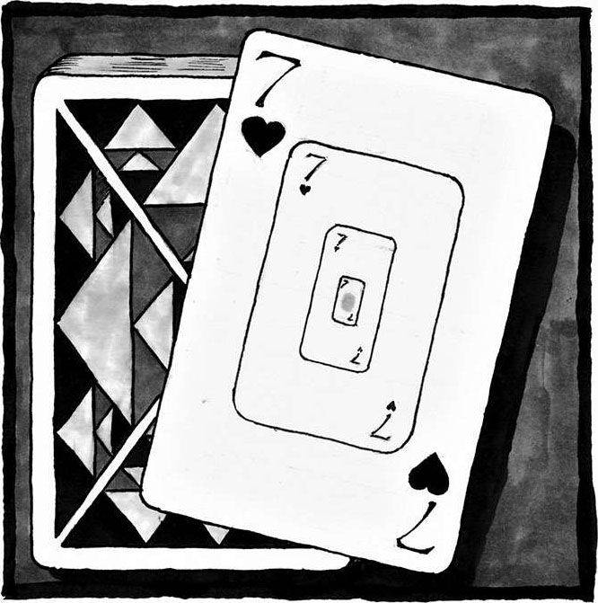
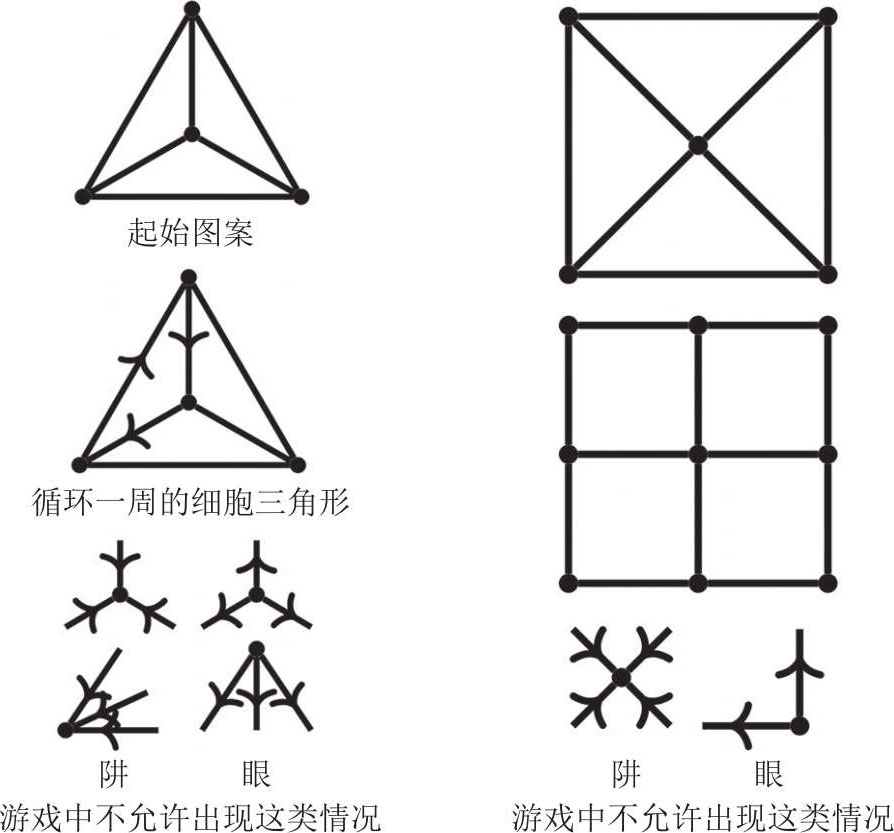
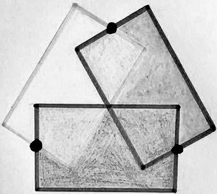

4 游戏
游戏就是一场以概率为主角的狂欢。
——马丁·布伯
（Martin Buber）1
重要的不是谁能率先提出这个想法，而是这个想法未来能发展成什么样。
——索菲·热尔曼
（Sophie Germain）2
早在生命的第一次呼吸之前，早在最基本的生存需求出现之前，婴儿就已经开始以游戏的方式感知世界。她咿咿呀呀地叫着，希望父母能予以回应。她还会毫无章法地踢动双腿，把手指伸进嘴里，在从手指、从嘴唇传来的两种截然不同的奇怪感觉中认识这个世界。令她做出这一切的最原始的驱动力，不是生存需求，而是好奇心，她的目的其实是在游戏中探知周边环境。呼喊与回应，双腿随机摆动，多角度探索，都是她的游戏手段。换句话说，她的每一个动作已经初步展现出了暗藏在游戏中的数学模式。

随着年龄的增长，她对游戏的那种渴求也会不断变化，并逐渐填满生活的每个角落。这种渴求会在潜移默化中影响她学习、工作、社交的方式。除此之外，这种渴求还会表现在各种文化生活当中，比如体育游戏、音乐游戏、文字游戏、猜谜游戏。另一方面，几乎每项活动中都能看到游戏的影子：舞蹈、约会、手工、烹饪、园艺，哪怕那些像工作或贸易一样“严肃”的活动也不例外。文化史学家约翰·赫伊津哈（Johan Huizinga）认为，人类文明社会每一项典型活动的形成过程都受到了游戏的强烈影响，比如语言、法律、商业、艺术，甚至战争——每项活动中都存在某些起源于游戏的元素。1作家G.K.切斯特顿（G. K. Chesterton）也表达过类似的观点：“我们有理由认为，游戏是人类生命的根本目标。”2
游戏不仅是一种潜藏在人们内心深处的渴求，也是人类繁荣的重要标志。
既然如此，游戏到底是什么？尽管很难定义，但我们可以看出游戏的很多关键特性。假如游戏指的是某种供人消遣、娱乐的活动形式，那么游戏就等同于趣事。可是这个定义并不能解释为什么游戏能让人感到有趣。为什么所有婴儿都喜欢玩躲猫猫这种游戏？
游戏还有很多其他特性，这些特性可以帮助我们进一步摸清游戏的本质。比如，游戏通常都带有自愿性，如果你强迫我一遍又一遍地弹奏某段钢琴曲，这顶多算是勤于练习，但肯定无法让人感受到游戏的快乐。此外，游戏通常都具有某种意义，否则我们不会花大把时间在这上面。游戏通常还会遵循某种模式，比如游戏都有自己的游戏规则，音乐和弦都有自己的组合原则，就连躲猫猫都有玩法。在模式之下，游戏还具有一定的自由度——博弈策略多种多样，音律千变万化，魔方图案五彩多姿，对躲猫猫来说，你永远猜不到我下次会在哪里出现。这种自由度带来了五花八门的探索过程——魔方还原的求解过程，足球比赛的策略博弈，爵士乐的即兴演奏。这些探索行为最终会给人们带来惊喜，比如一颗复原的魔方，躲猫猫游戏中看到了父母的搞怪脸，一段令人身心愉悦的音乐节奏，一语双关的好词妙句，比分出人意料的足球比赛。虽然动物们也喜欢游戏，但人类和它们有一个本质上的不同，那就是人类的创造性思维和想象力在游戏中发挥着举足轻重的作用。
正如约翰·赫伊津哈所说，游戏往往能够让参与者从日常生活中脱离出来，进入“一个与世隔绝，自成体系的活动领域”。3孩子们会玩“过家家”的游戏，大人们会围坐在桌旁于牌局中斗智斗勇，一支舞蹈可以让我们在三分钟之内心无旁骛。如果用音乐术语来比喻，生命就像交响乐，而游戏就是其中的插曲。如果用计算机术语来比喻，生命就像程序，而游戏就是其中的子程序。这一首首插曲、一段段子程序组成了一个独特的世界，吸引着人们迈入其中，让人们心甘情愿地将身心全部投入到这短暂的美好时光中。从这个角度来看，游戏有时候也是一种逃避。在最理想的游戏当中，玩家不会因别人的表现谩骂诋毁，大家彼此尊重，每个人都有充分的参与感，游戏输赢对人造成的影响也不会持续太久——虽然玩的时候会竭尽全力去获得胜利，但是没几天这事就会被人抛到脑后了。
数学能够把你的大脑变成一个游乐场。适时适量地研习数学，其实就像游戏一样：探索规律时的灵光一现会让你欢呼雀跃，发现事物的运转方式也会让你陶醉不已。学习数学并不等同于背诵各种公式，牢记解题步骤。退一步说，最起码这不是一个初学者应该面对的事。体育运动也是同样的道理，比如足球，除非你想在球场上技压群雄，否则没必要日复一日地反复练习，初学者完全可以放松身心，尽情享受踢球的快乐。
------循环游戏------
既然已经说了这么多关于游戏的事，我们不妨亲手设计一个游戏并玩上两局。现在立刻把你的好朋友叫过来，然后在纸上画一个由点和线构成的起始图案（参照下图），使得其中的线段刚好把大三角形切分成三个小三角形，游戏中将这三个小三角形称为大三角形的细胞。

游戏开始后，玩家轮流在起始图案中的线段上画一个单向箭头，画箭头时遵循以下规则：每条线段只允许存在一个箭头，每个端点都不能变成“阱”或“眼”。“阱”指的是和它相连的三条线段上的箭头全部指向该端点，“眼”指的是和它相连的三条线段上的箭头全部背离该端点。在“阱-眼”规则的限制下，对局中可能会出现某条线段无法绘制箭头的情况。
游戏的目标是画出一个循环一周的细胞三角形——该细胞三角形的三条边上的箭头刚好连成一圈，逆时针或顺时针均可。如果有哪位玩家率先画出了这种三角形，或者迫使对手再也画不出符合游戏规则的箭头，那么这位玩家便赢得了这局游戏。
尝试几局之后，你可以探索一下先手玩家或后手玩家的必胜策略。你还可以设计几个不同的起始图案。需要注意的是，细胞的形状不一定非得是三角形。
这个游戏是我刚想出来的，我在写下这些文字的时候并不清楚这款游戏是不是已经有人设计、研究过了。所以，这个游戏还存在着很多未被发掘的开放性问题，我现在其实和你一样，正处于兴致勃勃的探索过程中！
年轻的时候，有人向我展示了一种巧妙的便捷算法，这种方式相当简单，仅凭口算就可以快速求出那些尾数是 5 的数字的平方值。你感兴趣的话可以自己研究一下。某些人可能只会简单地感慨一下：数学中居然存在这种规律，我自己怎么就没想到呢。但对那些经验丰富的数学探索者来说，他们会意识到这种规律背后的魔力，开始产生更多期待——数学中肯定还存在其他更多规律，正等待着人们去探索发现。赶紧带着你的好奇心去多找几个巧妙的算法吧！
当你发现新概念，遇到新思想时，数学对你来说的确就像游戏一样。哪怕是那些专业的数学研究人员，他们在开展某项研究项目时也会经历一种游戏式的探索过程：寻找规律，形成概念，验证真伪，同时尽情享受探索之路上那些不断冒出的惊喜。在多人协作的研究项目中，即便有人一开始就踏出了错误的步伐，其他人也不会发出批判的声音；大家只会把这当成是探索过程中一段有趣的小插曲。数学探索者们不仅会研究那些短期内即可获取实际应用的数学问题，同时也会钻研那些本质上十分有趣却看不到长远价值的数学问题。更夸张的是，数学中专门开辟了一个被称为娱乐数学的分支。除了数学，还有哪个学术领域存在以“娱乐”二字开头的分支吗？（我猜可能有“娱乐化学”，不过我建议你离这种东西远一点。）
和普通的游戏相比，数学游戏具有某些更加优秀的特性。例如，虽然数学游戏也具有自愿性，但它的内在驱动力变成了人类强烈的好奇心，越是勤加练习这种好奇心就越强烈，就像某款新游戏，你对它越有感觉，你玩的意愿就越强烈。那些最有经验、最忠实的数学游戏爱好者，在遇到新概念、新思想时会迫不及待地和它们展开一场游戏。此外，就像普通游戏存在规则限制一样，数学游戏的自由度和模式也要遵循数学定律。
数学游戏的探索过程通常存在两个阶段。第一阶段为探究阶段。在此阶段中，数学探索者会探寻规律，归纳总结，从特例中推断出一般结论，即所谓的猜想。游戏的结局通常都蕴藏着有趣的规律。比如你正在研究尾数是 5 的数字的平方值，且已经算出下列式子：
152= 225
252= 625
352= 1225
452= 2025
数学教育中一直流行着这样一种教法，那就是给学生展示一个数学对象，然后问他们：“你们知道这是什么东西吗？你们有什么想问的吗？”以刚才计算的那些平方值为例，你看出数字的规律了吗？
这些问题会促使我们去思考隐藏在表象之下的更深层次的某些东西，让探索者能够与数学展开一次丰富的思想对话。我很喜欢保罗·洛克哈特（Paul Lockhart）在《一个数学家的叹息》（A Mathematician’s Lament）中说的一句话：“这就是在脑海中构建规律时令人感到不可思议的地方：它们会回应你！”4
上面的思想对话其实就是婴儿“呼喊与回应”（call-and-response）的变体，这种探索模式存在于各种游戏当中，其本质就是“动作产生回应”。比如在爵士之类的音乐中乐器之间会彼此呼应，部队行军时士兵们会对队长领唱的军歌做出回应，激烈的网球对打中挥舞的球拍就是对对手的回应，听到婴儿咿呀哭喊父母也会急忙回应。
在数学游戏中，面对“你们知道这是什么东西吗？你们有什么想问的吗？”这种源于数学本身的“呼喊”时，探索者会以自身的观察结果为基础做出“回应”：“这些平方值全部以 25 结尾。另外，我觉得平方值前面的数字 2、6、12、20 之间可能也存在某些共性。”这种思想对话还会发生很多次，直到探索者在多次观察之后终于得出自己的结论。比如你盯着这些平方值看了一会儿之后，兴高采烈地“回应”道：“我找到规律了！”这意味着你提出了一个猜想。
之后“呼喊者”与“回应者”会互换身份，探索者想要验证自己的结论就得亲自测试更多实例，而数学会以“确认”或“反驳”的方式做出回应。我们还是以平方值问题为例，为了验证自己的猜想，你会大声地向数学呼喊：“请帮我算一下 552。”数学会回应你说：“3025。”你会看看这个数字和自己的猜想是否一致，然后继续尝试：“请再帮我算一下 652。”数学会再回应你说：“4225。”
这种对话会循环好多次，直到探索者对自己的猜想有了十足的把握。这位探索者还有可能会在此过程中发现某个重要的数学概念，并以下定义的方式将其公布于众。你看，在这个数学游戏的小插曲中，凭借自己的能力和无拘无束的创造性思维，这位探索者成功建立了一个全新的数学准则。
由此可见，数学游戏很像婴儿咿呀哭喊、倾听回应的过程；也像布道者讲述真理、听众低呼“阿们”的过程； 又像网球选手在比赛中遭遇全新的对手时，用不同的击球方式试探对方的应对策略的过程。
数学探索的第二阶段为论证阶段。在此阶段中，数学探索者会通过演绎推理为自己的猜想提供某种逻辑说明，具体表现形式为数学证明或数学模型：用数学语言描述事物的前因后果。此外，该阶段还会涉及几种司空见惯的数学游戏模式。比如，为了证明结论的正确性，数学探索者可能会尝试反证法——先假定结论是错误的，再推理出明显矛盾的结果，从而排除此命题为假的可能。为了证明彼此相关的一系列结论的正确性，经验丰富的数学探索者可能会尝试数学归纳法——利用某个陈述的正确性去推导下一个陈述的正确性，整个过程就像推倒第一块多米诺骨牌之后其他骨牌也会依次倒下一样。这些成体系的数学证明步骤其实很像国际象棋中一连串的开局走法，能够帮你建立起良好的开端。
对数学模型而言，有一种数学游戏技巧特别实用，那就是尽可能地做出简明直观的假设。换句话说，这其实是在改变游戏范围，让问题变得更容易着手。比如，我们现在想建立一个用来描述咖啡冷却过程的数学模型，经验丰富的数学探索者可能会毫不犹豫地对咖啡液体、冷却速率做出几个简明的假设，因为他们知道尽管这种简化或许无法抓住问题的全部特征，但一定可以把握住问题最关键的方面。
数学游戏通常还要求参与者能够灵活切换视角，从不同角度看待问题，这一点也尤为关键。我曾经跟旅行团一起踏进了一个黑暗的洞窟，导游让我们关掉手中提的灯，在没有光线，只有声音的情况下体验蝙蝠感知洞窟的方式。于是我大喊一声，然后认真聆听来自四面八方的回声。这种感官上的切换，让我得以从全新的角度感知洞穴的存在。在数学游戏中，切换视角是解决问题必不可少的重要手段之一。以不同的方式探索问题，多角度认知问题，可以让你看清问题的方方面面，从而做到成竹在胸。正是出于这个原因，数学家们有时才会以涂鸦的形式分析数学——画一些简单的图示来代表对象之间的复杂关系——哪怕他们正在思索的问题根本没有对应的空间实体。有时他们也会尝试不同的标记方法或数学定义。正如我的某位学生曾经总结的那样：“选择一个恰当的标记方法或数学定义，实际上就是在你和手头的数学资料之间确定了一种思想对话的风格。”掌握了切换问题角度的技巧，教师们向他人阐释数学概念时就可以根据实际情况选择不同的方法途径。
可以看出，数学游戏既像一位根据以往经验确定开局策略的棋手，也像一名从箭袋中挑出恰当箭支的猎人，又像一名为了新式菜品精心挑选适宜调料的厨师。尽管某些方案的确优于其他方案，但能够解决问题的方案其实有很多，这些方案可以帮你烹制出各具风味的丰富菜肴。
面对我们的稳步推进，数学猜想要么举手投降，给出我们想要的答案，要么负隅顽抗，甩给我们更多新难题、新挑战。这时考验的就是数学探索者是否拥有合格的创造性思维，因为他必须不断地从自己的众多装备中挑出恰当的武器，将猜想中剩余的难题一一斩于马下。
我们一直说数学探索过程存在两个阶段，但实际上这只是一种人为区分。即便第二阶段已经完成，相关的数学证明或数学模型也已经建立完毕，面前仍旧会不断冒出新的问题，让我们不得不去寻找更为完整的证明方法，构建更为完善的数学模型。因此，我们最好把数学探索看成一种两个阶段交替出现、周而复始的循环过程。5
为了展现数学游戏中的这种循环过程，我们可以再看看之前那个问题：寻找一种便捷算法，从而快速求出尾数是 5 的数字的平方值。拥有了一个经过充分验证的猜想之后，你就可以进入第二阶段：找出这种便捷算法的原理并予以证明。你可以利用代数知识构建尾数是 5的数字的通用表达式，即 10n+5，其中n为任意自然数。现在求一下这个通式的平方，看看最后的结果能不能验证你的猜想。如果能，那你就成功找到了计算所有尾数是 5 的数字的平方值的便捷算法。我在这里省去了具体过程，主要是希望可以给你留下一个亲自获取探索成果的机会。
和你不同的是，当年的我根本没有机会去亲自探索、发现这个便捷算法——有人直截了当地向我展示了前因后果，我没能体验到那种令人情不自禁地喊出“啊哈！”的惊喜时刻。法国哲学家、数学家布莱兹·帕斯卡提醒我们：“通常来看，人们更容易被他们自己发现的理由所说服，而不是被其他人想到的那些理由所说服。”6尽管如此，我们还是习惯于把数学看成是某种向他人灌输知识的学科。
就我个人而言，这个酷炫的平方技巧变成了一块跳板，我踩着它跳进了数学游戏的深层区域。我开始思考：既然尾数是 5 的数字的平方值全部以数字 25 结尾，那么尾数是 25 的数字会不会也存在某种规律？这算是一个小小的挑战，如果你感兴趣，可以试着自己分析一下，然后得出结论，最后想办法给出证明。
这次的现象比上次还要有趣。可以看到，两个尾数是 25 的数字的乘积，仍然会以 25 结尾。这是一种相当奇妙的数字特性，我们不妨给它起个名字。其实这也刚好反映了数学游戏的趣味性和创造性：对于自己在数学游戏中发现的那些数学规律，我们拥有自主命名的权利。
现在我们正式将数字最后面的几位称为“尾数”。如果两个数字的乘积和这两个数字本身具有相同的尾数，我们就将这种尾数称为“恒驻尾数”。根据定义，25 就是一个恒驻尾数。那么新的问题来了：
除 25 以外，还有哪些两位数属于恒驻尾数？
之所以这个问题如此简单明了，是因为我们给出了恰当的定义。一番探索之后你会发现 7，两位数当中只有以下 4 个属于恒驻尾数：
……00
……01
……25
……76
你可能早就猜到了其中会有“……00”（你知道为什么吗？），但其他 3 个可不这么好猜。当初找到 76 这个数字时我就觉得很不可思议，我根本没想到两个尾数是 76 的数字的乘积，其尾数居然还是76。两位数找完了，我们再看看三位数——哪些三位数属于恒驻尾数？难道我必须把 1000 个三位数都测试一遍才能找全答案吗？（小提示：当然不用这么麻烦。）结果和刚才一样，满足条件的三位数也只有 4 个：
……000
……001
……625
……376
哪些四位数属于恒驻尾数？哪些五位数属于恒驻尾数？
我仔细研究了各种位数的恒驻尾数，结果每种位数的最终答案都着实让我惊讶了一番。无论位数有多长，每种位数中似乎都只存在 4个恒驻尾数，而且每个恒驻尾数都会“继承”上一个长度的恒驻尾数的某些特征。比如：
三位恒驻尾数……625
可以演变为
四位恒驻尾数……0625
然后可以继续演变为
五位恒驻尾数……90625
一直演变下去，你会发现：
……259918212890625 是唯一一个以数字 5 结尾的十五位恒驻尾数。这个答案是多么的撩人心弦啊！虽然你根本不知道尾数前面的数字，但是你可以确定这一连串神秘数字的结尾！此时此刻，数学世界中那些含苞的花朵似乎正悄然绽放在我的面前。
其他恒驻尾数不断演变下去会发生什么？如果你不想看答案，只想自己探索，请不要阅读这句话的注释8，放手去试一试吧。我自己对这个问题相当着迷，最后竟然算出了全部的十五位长度的恒驻尾数。然后我又有了新的疑问：这些尾数之间是不是存在某种关联？
我坐在椅子上，沉思了好一会儿。
突然间，我灵光一现，看出了数字间的规律！（顺便说一句，即便没有算到十五位这么长，你也能发现这个规律。）这一刻我仿佛沐浴在圣光之中，数学世界那扇神秘的大门已经向我敞开，门内的深刻思想似乎正在向我招手。其他人有没有发现这个规律？我真想把我的这份激动和兴奋分享给每一个人！这个规律可以说是优美无比、震撼人心，可是当时的我很难解释个中缘由！不过，虽然我不知道它为什么正确，但直觉告诉我它绝对没错。
直到多年以后，我在大学的数论课程中学到中国余数定理（Chinese remainder theorem），我才解开了这个数学规律背后的秘密。我终于弄清了这个规律的成因，并找到了证明方法。后来我又发现，恒驻尾数早就被其他人研究过 9，但这并不重要。数学游戏的乐趣在于不断拓展那些奇思妙想，看看它们到底能走多远。
即便不了解数论，你恐怕也会对刚才这些内容发出由衷的赞叹。确实是这样的，只要你能注意到这个规律，并且问了一声“为什么”，你就已经参与到数学游戏当中了。逐渐地，你跳出了世俗的日常节奏，全身心地投入到幕间曲中。在此，你执着的态度、游戏的过程全部得到了回报，你收获了惊喜、快乐，并且离真理更近了一步。最终，这些更进一层的数学技巧可以给予你一种全新的成长体验。
你看，适当的数学游戏能够帮助我们培养美德，而这些美德反过来又可以帮助我们在生命的各个领域中蓬勃发展。
例如，数学游戏帮助我们建立希望——在反反复复研究同一个问题的过程中，你会逐渐燃起希望，坚信问题一定能够得到圆满解决。有了这种建立希望的切身体验之后，我们在处理其他难题时便会得心应手。此外，在探索过程中，数学游戏还会培养我们的好奇心，提升我们的专注力，让我们远离日常生活的纷扰，尽情享受这种注意力高度集中的美妙感觉。西蒙娜·韦伊曾经说过：
就算我们在几何学方面没有什么天赋，或者缺少那种一见钟情的感觉，也不意味着我们无法在努力解决问题、研究某种理论的过程中锻炼、提升我们的专注力。从某种程度上来说，这反而是一种优势。10
面临困境时，数学游戏还可以培养我们的自信心——你很熟悉那种拼搏的感觉，因为你已经习以为常，无所畏惧。你也清楚，解决问题时那种苦思冥想、绞尽脑汁的过程，实际上是一场令人身心愉悦的思维锻炼。数学游戏还可以培养我们的耐力，因为为了最终的水落石出，我们通常要熬上很久，等待几年、几十年也毫不稀奇。数学游戏还可以帮我们养成不屈不挠的品格——就像踢足球，每周刻苦练习可以让肌肉得到锻炼，使我们以更强壮的姿态迎接下一场球赛。数学游戏也一样，日常的探索和练习可以让我们在处理任何新问题时都更加游刃有余——哪怕我们手头的问题还没有彻底解决。
此外，数学游戏还可以锻炼我们切换视角、全方位认知问题的能力，同时也可以培养我们的开放性精神，为公众、社会奉献一份力量——你与他人分享自己的奋斗经验、分享自己全力解决问题的那种快乐时，你其实就是在试着全面、正确地认知他人。以上便是数学游戏给我们带来的几个最重要的美德。
另一方面，当数学游戏遭受负面力量的冲击时，开放精神也是最容易受到损害的品格之一。例如，过分强调成绩会导致不健康的竞争；过分强调风险会破坏游戏的趣味性和开放性；骄傲自大会滋生排外行为，将一些人阻拦在数学游戏的大门之外，使游戏的崇高性蒙尘受损。
数学家戈弗雷·哈罗德·哈代（G. H. Hardy）写过一本举世闻名的为数学辩护的书——《一个数学家的辩白》。虽然书中文字感情丰沛，有时也确实能起到预期的效果 11，但他似乎过于重视数学成就，还把它看成是数学家的终极目标——他甚至会用“微不足道”这种字眼贬低某些问题，将自身的数学贡献视为平凡琐事。在我看来这是一种误导。他过分强调了数学工作中的是非成败，却忽视了数学本来应该是一项充满游戏性的、令人愉悦的活动，实在令人感到遗憾。
倘若我们能够将数学视为一项好玩有趣的运动，而不是一项强调成绩的运动，那我们的数学教育一定会发生翻天覆地的变化。
数学竞赛原本只是一种数学游戏，旨在通过解题经验的分享，促进整个数学行业的共同发展。不过，现在它变成了一个相当微妙的话题。我知道有些人对它的实际价值表示怀疑，我也清楚这背后的原因。这类竞赛项目有时会助长一些不良的竞争风气，尤其是在赛程设计不合理，或者只看重解题速度（比拼的是一种计算技巧，而非数学技巧），而不在意创造力的时候。此外，数学竞赛通常只会吸引一小群人前来参加，这些人往往对数学已经有了较为深刻的理解，擅长通过各种不同形式来享受数学的乐趣（还有很多人从未拥有过参赛机会）。如此便导致了一个令人遗憾的结果：公众会认为只有最后的胜者才是真正“擅长数学”的人。其实这种关联性没有什么道理。想想那些虽然拥有过人的运动天赋，但对百米赛跑并不感兴趣，也从没参加过百米赛跑的运动员吧。如果把百米赛跑当成唯一的“体育竞技”，把百米冠军神化为唯一“擅长体育”的运动员，那也未免过于荒唐。
然而，事情并不全然如此。我曾亲眼见证了用心组织起来的数学竞赛给大家带来的种种益处，也见到过很多生平第一次“找到组织”的小孩，对于那些好玩有趣的问题，他们每个人都有着同样的热爱，并在分享交流中收获了牢固的友谊。在志同道合的群体中，没有任何人会因为自身不同寻常的爱好而遭受讥笑或羞辱。每个人都具有较强的开放精神，能够以包容接纳的态度迎接新人的到来。如果他们当前正在钻研的问题足够有趣，那么这些初来乍到的朋友还可以相互交流探讨，将手头的这场数学游戏一直传递下去。
2016 年，美国代表队第二次摘得国际数学奥林匹克竞赛的桂冠。对美国代表队来说，这是一项相当了不起的成就，因为在 2015 年之前美国已经连续 20 年没有拿过冠军。此次夺冠的过程中有一个鲜为人知的小细节，那就是美国队教练、新加坡裔数学家罗博深先生曾在赛前邀请其他国家的队伍和美国队一起备战。比起竞赛本身，他更重视集体精神，以及大家围坐在一起共同解题的那种快乐。新加坡总理对罗博深的行为无比赞赏，甚至曾在公开场合就这项不同寻常的合作向美国总统奥巴马表示感谢。12享受真正的数学游戏精神，其实比获得胜利更加重要。
我们可以对埋藏在人们内心深处的对游戏的渴求加以引导，让其他人和我们一起走到数学中去。因此，游戏在数学学习过程中应扮演重要角色。每个人都拥有游戏的能力，每个人都喜欢游戏带来的快乐，每个人都可以在数学游戏中给自己留下一段有意义的经历。正如柏拉图所说：“我的朋友，千万不要强迫孩子们去学习，而要寓教于乐，让他们在玩乐的过程中爱上学习。”13
想要把数学游戏变成自身学习过程中的重要组成部分，其实有很多方法，比如你可以寻找、总结身边发生的各种规律。每找到一个新规律，你就开始提出各种问题。如果遇到难题，可以先尝试自己解决，实在没有办法也要在对它有了感觉之后再查答案。每次成功解决问题之后，都要试着做出更深一步的分析，并提出各种延展性问题。你还可以围绕自身建立一个数学圈子——无论是在家里，还是在学校，抑或朋友之间——让每个人都明白提出好玩有趣的问题是多么重要。如果你是家长，或是教师，那你可能对这种事有些抵触，害怕遇到无法回答的问题，但这是塑造一个探索者的一部分：你不可能永远都知道问题的答案，但你会在数学游戏的过程中逐渐明白如何去培养并突显各种优秀品格，这会帮助他人找到苦寻已久的答案。
游戏已经深深地刻在了人类的基因里，那种对游戏的本能渴求一定可以吸引人们去探索数学、享受数学。
------几何趣题------
下图中有三个重叠在一起的、彼此全等的矩形（大小相等，形状相同），每个矩形的面积都是 4。三个黑点代表三个矩形短边的中点，三条长边相交于各自的中点之上。请问图中形成的这种图案总面积是多少？

这道漂亮的数学题由英国剑桥数学教师卡特里奥娜·希勒（Catriona Shearer）创作、提供。她很喜欢设计这类几何趣题，目前这些题目在推特上相当流行。出人意料的是，她的这项爱好竟然起源于一次户外探险活动！她的原话是这样的：
当时我正在苏格兰高地度假，但是出发时居然忘了带外套，以至于我待在室内的时间比我的朋友们多很多！我只好不断地顺着“我是不是可以算出这个……”这种思路，在纸上涂涂画画。
我根本没想到这会变成我的一项爱好，但这真的有点让人上瘾……
起初我还只是随笔涂鸦，后来我画了满满一页的以不同角度叠加在一起的正方形，以及涂上各种阴影的规则五边形，想要看看这些图案背后是否存在什么好玩的数学规律，比如长度之间、面积之间、角度之间的关系。[1]
剧透：在这封信中，克里斯解决了“分割蛋糕”谜题（参见第 1章结尾）。如果你不想看解答过程的话，可以直接跳到最后一段。
弗朗西斯先生，您好：
我确信这次我已经正确解出了您留给我的题目。一开始我以为这个问题缺了很多条件，所以我根据不同情况给出了两种答案……
2（a）. 如果这两个矩形的中心并不重叠，但外部矩形的某条对角线刚好穿过了内部矩形的中心，那么只要沿着刚才这条对角线切一刀就好了。
2（b）. 如果内部矩形的中心和外部矩形两条长边之间的距离刚好相等，那么只要画一条能够穿过内部矩形中心的水平线，然后沿着这条线切一刀就好了。
但我并没有满足于此，我开始思考直线的倾角、嵌在内部三角形中的三角形、内部三角形的面积、直角三角形的斜边和两条直角边、边角边、距离，然后我又想到两点确定一条直线、两点和两点之间的距离可以确定一条线段。
突然之间，我灵光一现，想到了最终答案。
3.（适用于一般情况的答案）：简而言之，一条同时经过内部矩形中心和外部矩形中心的直线就可以解决问题。
这真是一个相当不错的问题：它具有一定的启发性，能够让人充分利用已经学过的那些知识。把第一版答案寄给您之后，我突然意识到其中有些内容并不完全正确。至于如何改进答案，我心中已经有了一些模糊的想法，但这显然会让问题变得更为复杂。多亏了您的鼓舞与激励，我才得以想出一个更好的答案。
克里斯
2018 年 1 月 28 日
[1] 本·奥尔林曾对卡特里奥娜·希勒做过一次采访，具体内容收录于博客文章《20 道趣味问题》（令人抓耳挠腮又爱不释手的几何题）之中。博客名字叫作“随笔涂鸦学数学”（Math with Bad Drawings）。此篇博文发布于 2018 年 10 月 3 日，网址为：https://mathwithbaddrawings.com/2018/10/03/twenty-questions-of-maddening-delicious-geometry。